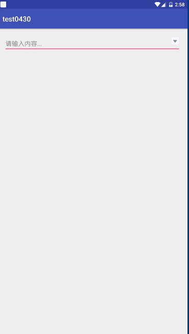

自定义View系列的第三篇博客，我们来学习如何实现自定义下拉框。
今天的程序，我们来实现这样的一个效果。

布局非常简单，我们直接开始编码。
修改activity_main.xml文件的代码。
<?xml version="1.0" encoding="utf-8"?>
<RelativeLayout xmlns:android="http://schemas.android.com/apk/res/android"
xmlns:app="http://schemas.android.com/apk/res-auto"
xmlns:tools="http://schemas.android.com/tools"
android:layout_width="match_parent"
android:layout_height="match_parent"
tools:context="com.itcast.test0430.MainActivity">
<EditText
android:id="@+id/et_input"
android:layout_width="match_parent"
android:layout_height="wrap_content"
android:ellipsize="middle"
android:hint="请输入内容..."
android:paddingRight="40dp"
android:singleLine="true" />
<ImageView
android:id="@+id/iv_down_arrow"
android:layout_width="30dp"
android:layout_height="30dp"
android:layout_alignRight="@id/et_input"
android:layout_alignTop="@id/et_input"
android:padding="5dp"
android:src="@drawable/down_arrow" />
</RelativeLayout>布局代码非常简单，就是两个控件。
接下来修改MainActivity的代码。
package com.itcast.test0430;
import android.graphics.Color;
import android.os.Bundle;
import android.support.v7.app.AppCompatActivity;
import android.view.View;
import android.view.ViewGroup;
import android.widget.AdapterView;
import android.widget.BaseAdapter;
import android.widget.EditText;
import android.widget.ImageView;
import android.widget.ListView;
import android.widget.PopupWindow;
import android.widget.TextView;
import java.util.ArrayList;
import butterknife.BindView;
import butterknife.ButterKnife;
import butterknife.OnClick;
public class MainActivity extends AppCompatActivity {
@BindView(R.id.et_input)
EditText etInput;
@BindView(R.id.iv_down_arrow)
ImageView ivDownArrow;
/**
*
*/
private PopupWindow popupWindow;
private ListView listView;
private ArrayList<String> msgs;
private MyAdapter adapter;
@Override
protected void onCreate(Bundle savedInstanceState) {
super.onCreate(savedInstanceState);
setContentView(R.layout.activity_main);
ButterKnife.bind(this);
listView = new ListView(this);
listView.setBackgroundColor(Color.WHITE);
//准备数据
msgs = new ArrayList<>();
for(int i = 0;i < 500;i++) {
msgs.add(i + "--aaaaaa---" + i);
}
adapter = new MyAdapter();
listView.setAdapter(adapter);
listView.setOnItemClickListener(new AdapterView.OnItemClickListener() {
@Override
public void onItemClick(AdapterView<?> parent, View view, int position, long id) {
//1、得到数据
String msg = msgs.get(position);
//2、设置到输入框
etInput.setText(msg);
if(popupWindow != null && popupWindow.isShowing()){
popupWindow.dismiss();
popupWindow = null;
}
}
});
}
@OnClick(R.id.et_input)
public void onViewClick(View view){
if(popupWindow == null){
popupWindow = new PopupWindow(this);
popupWindow.setWidth(etInput.getWidth());
popupWindow.setHeight(400);
popupWindow.setContentView(listView);
popupWindow.setFocusable(true);//设置焦点
}
popupWindow.showAsDropDown(etInput,0,0);
}
class MyAdapter extends BaseAdapter{
@Override
public int getCount() {
return msgs.size();
}
@Override
public Object getItem(int position) {
return null;
}
@Override
public long getItemId(int position) {
return 0;
}
@Override
public View getView(int position, View convertView, ViewGroup parent) {
ViewHolder viewHolder;
if(convertView == null){
convertView = View.inflate(MainActivity.this,R.layout.item_main,null);
viewHolder = new ViewHolder();
viewHolder.tv_msg = convertView.findViewById(R.id.tv_msg);
viewHolder.iv_delete = convertView.findViewById(R.id.iv_delete);
convertView.setTag(viewHolder);
}else{
viewHolder = (ViewHolder) convertView.getTag();
}
//根据位置得到数据
final String msg = msgs.get(position);
viewHolder.tv_msg.setText(msg);
//设置删除
viewHolder.iv_delete.setOnClickListener(new View.OnClickListener() {
@Override
public void onClick(View v) {
//1、从集合删除
msgs.remove(msg);
//2、刷新UI---也就是 刷新适配器
adapter.notifyDataSetChanged();
}
});
return convertView;
}
}
static class ViewHolder{
TextView tv_msg;
ImageView iv_delete;
}
}item_main.xml文件的代码如下。
<?xml version="1.0" encoding="utf-8"?>
<LinearLayout xmlns:android="http://schemas.android.com/apk/res/android"
android:layout_width="match_parent"
android:layout_height="50dp"
android:gravity="center_vertical"
android:orientation="horizontal"
android:padding="5dp">
<ImageView
android:layout_width="50dp"
android:layout_height="50dp"
android:layout_gravity="center_vertical"
android:layout_margin="5dp"
android:padding="3dp"
android:src="@drawable/user" />
<TextView
android:id="@+id/tv_msg"
android:layout_width="wrap_content"
android:layout_height="wrap_content"
android:layout_gravity="center_vertical"
android:layout_margin="5dp"
android:layout_weight="1"
android:gravity="center"
android:padding="3dp"
android:text="三个火枪手"
android:textColor="#000" />
<ImageView
android:id="@+id/iv_delete"
android:layout_width="30dp"
android:layout_height="30dp"
android:layout_gravity="center_vertical"
android:layout_margin="5dp"
android:padding="3dp"
android:src="@drawable/delete" />
</LinearLayout>这里的代码也很简单，所以不作过多解释，代码的每个地方都有注释。唯一需要注意的地方就是，因为我们的PopupWindow类是设置了宽为200，而只要是在代码中设置的控件属性，它的单位均为px(像素)，而像素是没有适配功能的，所以为了使我们的程序能够在任意分辨率的手机上正确运行，我们应该把像素转换为dp。
提供给大家一个工具类，用于dp与px之间的转换。
package com.itcast.test0430;
import android.content.Context;
public class DensityUtil {
/**
* 根据手机的分辨率从dip的单位转换为px(像素)
*/
public static int dipToPx(Context context,float dpValue){
final float scale = context.getResources().getDisplayMetrics().density;
return (int) (dpValue * scale + 0.5f);
}
/**
* 根据手机的分辨率从px(像素)的单位转换为dip
*/
public static int pxToDip(Context context,float pxValue){
final float scale = context.getResources().getDisplayMetrics().density;
return (int) (pxValue * scale + 0.5f);
}
}所以，我们把popupWindow.setHeight(400);改为
int height = DensityUtil.dipToPx(this,400);
popupWindow.setHeight(height);即可。
现在运行项目，预览一下效果。
这样，我们的下拉框也就实现了。现在有了dp和px之间转换的工具类，我们就可以在需要屏幕适配的地方使用它了，包括我们之前练习的一些项目。